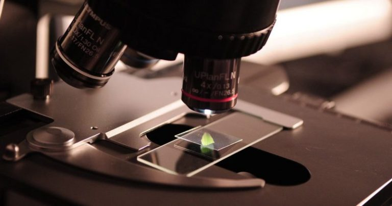
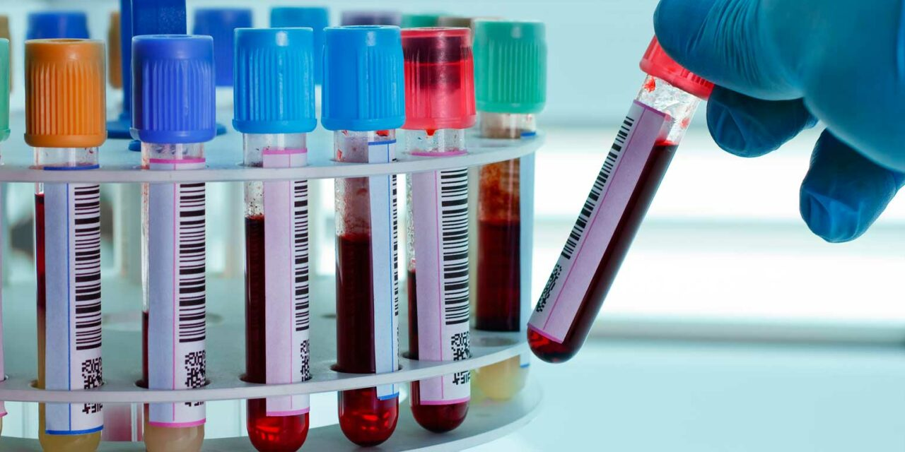

CIENCIA DE MENTE
Si bien se sabe, hoy en día las pruebas en laboratorios son muy importantes, ya que con ello los científicos de hoy en día realizan pruebas conforme a sustancias o materiales de relevancia, como por ejemplo la SANGRE.
Investigadores de cinco países descubrieron que las pruebas diagnosticadas de laboratorios se usan de manera similar en todo el mundo, aunque las instituciones que estudiaron difirieron en términos de niveles de pobreza, sistemas de salud y prevalencia de enfermedades.
“Aunque los países más pobres tiene muchas más enfermedades infecciosas, mientras que los más ricos sufren más enfermedades no transmisibles como los accidentes cerebrovasculares, la diabetes y las infecciones cardíacas, los patrones de las pruebas fueron sorprendentemente similares en estos países”, dijo Susan Horton, profesora de salud pública en la Universidad de Waterloo y el investigador principal del estudio.
Sin embargo los investigadores obtuvieron datos sobre las 25 pruebas más comunes en cinco hospitales, desde ingresos medio altos, ubicados en todo el mundo: Kenia., India, Nigeria, Malasia y los E. E. U. U.
|  |
En terminos de precios para diferentes tipos de pruebas en cada hospital, los investigadores compararon la prueba bioquímica más común (glucosa en sangre), más común (CBC), la prueba de microbiología más común (CBC), la prueba de microbiología más común (cultivo de orina) y las pruebas histopatológicas en general (quirúrgicas.
Encontraron que apesar de los precios relativos variaban, el precio de las pruebas bioquímicas era el más bajo en cada hospital, los precios de las pruebas de hematología y microbiología eran de aproximadamente tres veces más altos, y el precio de las pruebas histopatológicas eran de aproximadamente 15 veces más alto que el precio de las preubas bioquímicas.
Sorprendentemente una prueba para diagnósticar la tuberculosis solo apareció entre los 25 primeros en un hospital, a pesar de la prevalencia de la enfermedad en algunos países. Los investigadores plantean la hipótesis de que fuera del sistema hospotalario, como las instituciones dedicadas a la tuberculosis.
Una implicación importante es que la nueva lista de diagnósticos esenciales emitida por la Organización Mundial de la Salud (OMS) en 2018 probablemente sea una herramienta poderosa, y dado que la mayoría de las pruebas en la lsiat de los mejores, también se incluyeron es la lista de la OMS., estos hallazgos tienen el potencial de informar a los planes de cobertura de salud universal".
|  |